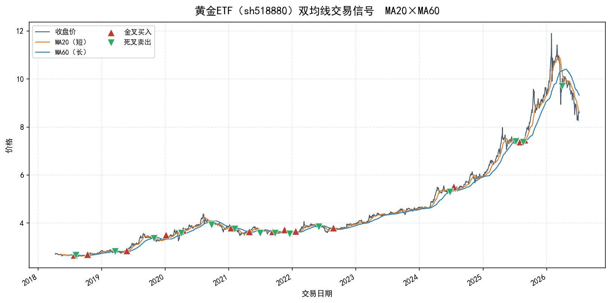
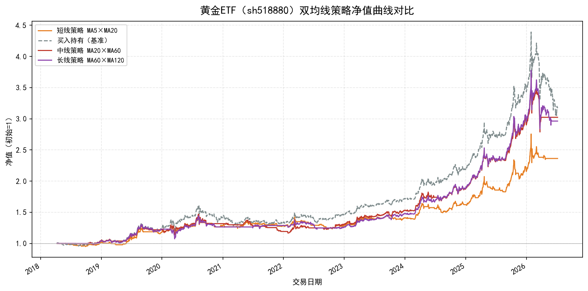
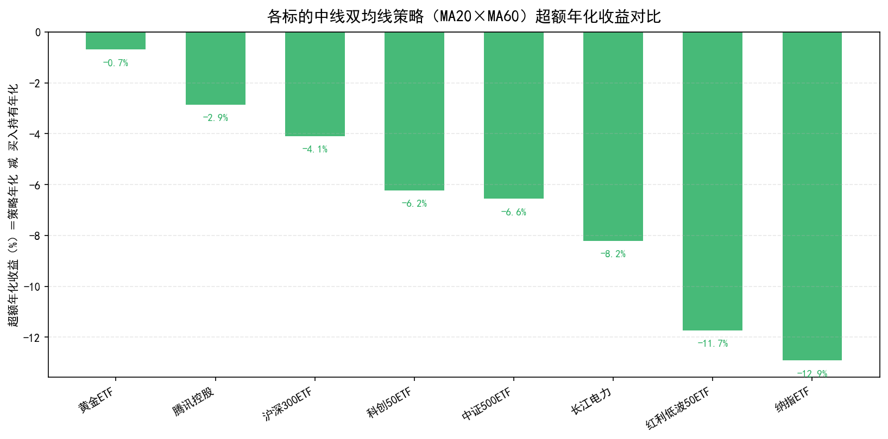
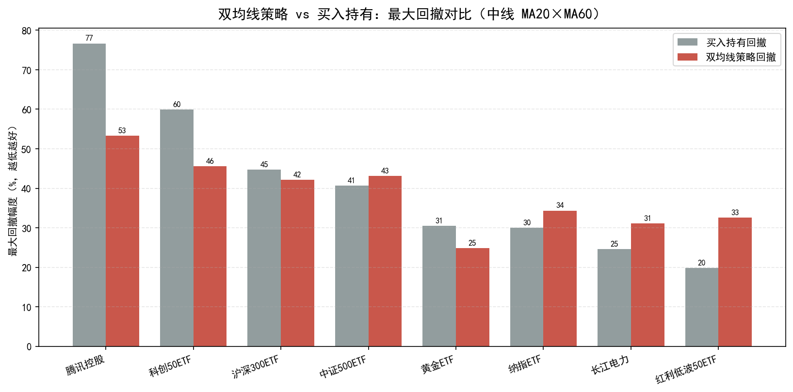
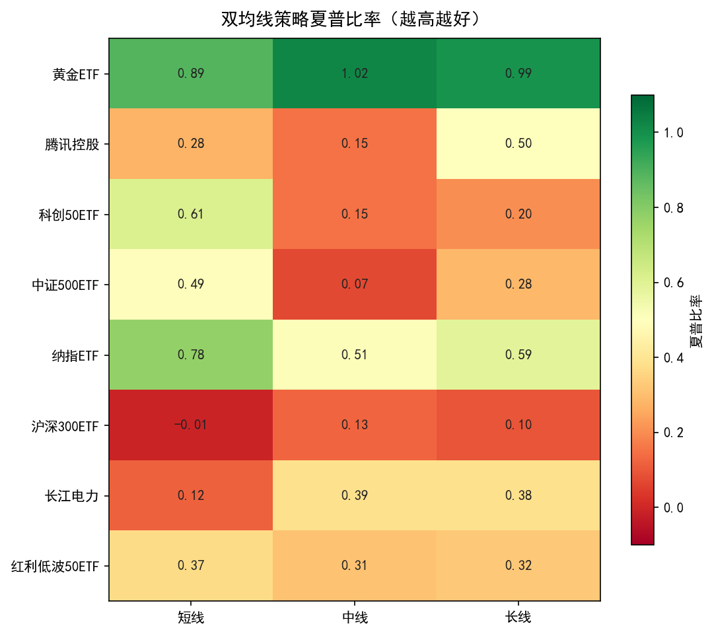
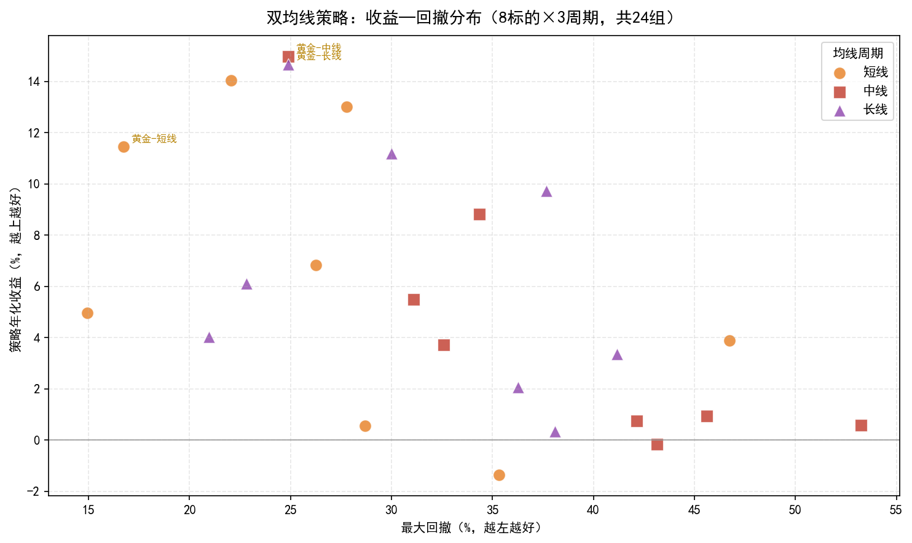

本任务在前两次工作坊（搭建数据引擎、数据诊断与指标构造）的基础上，迈出策略开发的第一步：系统学习并实现经典的双均线（Dual Moving Average）交叉策略，用金叉、死叉信号捕捉市场趋势变化，并以最大回撤、夏普比率、累计回报、超额收益、胜率、盈亏比等指标全面评估策略表现。为使结论更可靠，本文先检索了均线策略的重要学术文献，明确其在何种标的上更有效，随后对黄金 ETF、腾讯控股、纳指 ETF、科创 50、沪深 300、中证 500 等 8 个标的、短/中/长三组均线周期共 24 组参数进行了实证回测。
移动平均线（Moving Average, MA）是把最近 N 个交易日的收盘价取算术平均得到的一条平滑曲线，它过滤了单日价格的随机噪音，反映一段时间内价格的"平均成本"与趋势方向。均线周期越短，对价格变化越敏感、越贴近行情；周期越长，越平滑、越能代表中长期趋势。
双均线策略同时使用两条不同周期的均线：一条较短（如 MA5、MA20，称"快线"），一条较长（如 MA20、MA60，称"慢线"）。二者的相对位置刻画了短期动能与长期趋势的关系，其交叉点即为交易信号：
当短期均线由下向上穿越长期均线时，形成"金叉"。它意味着近期价格上涨的动能已强于中长期均值，市场趋势可能由弱转强、由跌转涨，是经典的做多（买入）信号。
当短期均线由上向下穿越长期均线时，形成"死叉"。它意味着近期动能已弱于中长期均值，趋势可能由强转弱、由涨转跌，是经典的做空或平仓（卖出）信号。
双均线策略的本质是一种"趋势跟踪"：金叉后满仓持有、死叉后清仓空仓，力求"截断亏损、让利润奔跑"，在单边上涨行情中吃到主升浪、在下跌行情中及时离场规避风险。它不预测顶底，只对已经发生的趋势变化做出反应，因而天然存在"滞后性"——这也是后文实证中需要重点评估的代价。
评价一个策略不能只看"赚了多少"，还要看"冒了多大风险、是否稳定、是否真的比躺着不动更强"。本文采用以下一整套指标进行评估：
指从期初到期末，策略净值累计增长的比例。若初始净值为 1、期末净值为 V，则累计回报 = V − 1。
把不同时间长度的收益折算到"每年"的标准口径，便于横向比较。以 252 个交易日为一年：
指净值曲线从历史最高点回落到之后最低点的最大跌幅，衡量策略"最坏情况下会亏多少"，是刻画下行风险与持有煎熬程度的关键指标。MDD 越小（越接近 0），资金曲线越稳。
由诺贝尔经济学奖得主 William Sharpe 提出，衡量"每承担一单位波动风险，能换来多少超额收益"，是风险调整后收益的核心标尺。数值越高越好，一般认为大于 1 即较为优秀。
这是本文特别强调的指标。一只标的本身可能就是大牛股，即使一直满仓持有也能赚很多。为区分"收益到底是策略择时带来的，还是标的本身优秀带来的"，本文定义：
超额收益为正，说明策略的择时确实创造了价值、跑赢了"躺平"；为负，则说明频繁进出反而不如一直持有。它把"标的 β"从"策略 α"中剥离出来，是判断策略真实能力最诚实的一把尺子。
胜率 = 盈利交易笔数 / 总交易笔数；盈亏比 = 平均每笔盈利 / 平均每笔亏损。趋势跟踪策略的典型特征是"胜率不高但盈亏比很高"——靠少数几次抓住大趋势的盈利，覆盖多次小幅止损。
本文的回测引擎完全手工实现（strategy.py），核心分为五步：加载数据、计算双均线、生成金叉死叉信号、按"信号次日生效"建立仓位、计入交易成本后累乘得到净值曲线。为杜绝"未来函数"，第 t 日收盘后产生的信号在第 t+1 日才实际建仓或平仓，并在仓位变化当日扣除单边万分之五交易成本。
# 1) 计算短、长均线 ma_short = close.rolling(short).mean() ma_long = close.rolling(long).mean() # 2) 金叉/死叉信号：短均线在长均线之上则持仓状态=1 raw = (ma_short > ma_long).astype(int) cross = raw.diff() # +1 金叉当日, -1 死叉当日 # 3) 信号次日生效，避免未来函数 position = raw.shift(1).fillna(0) # 4) 计入交易成本后的策略日收益 ret = close.pct_change() trade = position.diff().abs() # 仓位变化 -> 发生交易 strat_ret = position * ret - trade * 0.0005 # 5) 净值曲线（策略 vs 买入持有基准） equity = (1 + strat_ret).cumprod() bench_equity = (1 + ret).cumprod()
数据方面，本文通过腾讯自选股行情接口获取 8 个标的近 8 年（多数为 2018-04 至 2026-07，约 2000 个交易日）的前复权日线数据。下面以黄金 ETF（518880）的中线参数（MA20×MA60）为例，展示价格、双均线与买卖信号。

如图 1，红色上三角为金叉买入点、绿色下三角为死叉卖出点。在 2018—2019 与 2021—2023 的横盘震荡期，均线频繁交叉产生较多假信号；而在 2019—2020 与 2024—2026 的两轮单边上涨中，金叉后价格持续走高、策略长期持有吃到主升浪，直到 2026 年中见顶死叉离场。这直观展示了双均线策略"怕震荡、爱趋势"的本质。
发表于《Journal of Finance》的 BLL（1992）是检验技术交易规则的开山之作。他们用道琼斯工业指数 1897—1986 长达 90 年数据，通过自助法（Bootstrap）严格检验，发现买入信号（短均线上穿长均线）之后的平均收益显著高于卖出信号，且波动更小；该结果无法被随机游走、AR(1)、GARCH-M 等模型解释，为"均线规则确实包含预测力"提供了首个量化证据。
后续研究（Bessembinder & Chan 1998，以及对 1987—2013 年美英日三大成熟市场的再检验）发现，BLL 记录的预测力在 1987 年后显著减弱。原因在于：随着参与者学习、套利资金涌入、成本下降，规则一旦被广泛知晓，超额收益就会被"抢跑"消失。这正是 Lo（2004）"自适应市场假说"的核心——技术规则只在一段时间内有效，会随市场进化而失灵。
与成熟股市相反，趋势跟踪在大宗商品期货上表现突出。Miffre & Rallis（2007，《Journal of Banking & Finance》）对 31 种商品期货 1979—2004 的动量策略研究发现，13 个动量策略年均收益达 9.38%，而同期等权买入持有商品组合反而亏损 2.64%，且不随样本期衰减。Moskowitz、Ooi & Pedersen（2012）在 58 个跨资产品种上进一步证实"时间序列动量"普遍存在。共同结论是：趋势跟踪在趋势性强、波动大的标的（黄金等贵金属、原油等商品，及具备长期上行 beta 的成长指数）上更有效。
综合文献，双均线策略更可能在"黄金等大宗商品、趋势鲜明的成长指数"上跑出价值，而在"高效率、宽幅震荡的大盘蓝筹与宽基指数"上易因滞后与假信号跑输。恰好本文标的中含黄金 ETF（518880，商品属性）与纳指 ETF（159941，成长指数），可直接作为文献结论的实证检验对象。
本文对 8 个标的分别采用短线（MA5×MA20）、中线（MA20×MA60）、长线（MA60×MA120）三组参数回测，共 24 组结果，每组均与"买入持有"基准对比，重点看超额收益。
| 标的 | 周期 | 参数 | 总收益 | 年化 | 超额年化 | 夏普 | 最大回撤 | 胜率 | 盈亏比 |
|---|---|---|---|---|---|---|---|---|---|
| 黄金ETF | 短线 | MA5×MA20 | 136.3% | 11.4% | -4.2% | 0.89 | -16.7% | 46% | 4.96 |
| 黄金ETF | 中线 | MA20×MA60 | 202.4% | 15.0% | -0.7% | 1.02 | -24.9% | 64% | 10.69 |
| 黄金ETF | 长线 | MA60×MA120 | 196.3% | 14.7% | -1.0% | 0.99 | -24.9% | 83% | 10.49 |
| 纳指ETF | 短线 | MA5×MA20 | 183.4% | 14.0% | -7.7% | 0.78 | -22.1% | 52% | 3.23 |
| 纳指ETF | 中线 | MA20×MA60 | 95.6% | 8.8% | -12.9% | 0.51 | -34.3% | 59% | 2.67 |
| 纳指ETF | 长线 | MA60×MA120 | 131.8% | 11.2% | -10.6% | 0.59 | -30.0% | 67% | 3.24 |
结果与文献高度吻合：黄金 ETF 是全样本中表现最好的标的——中线年化 15.0%、夏普 1.02、最大回撤仅 24.9%，超额年化仅 −0.7%（几乎追平买入持有），盈亏比高达 10.7（胜率 64%）。这正是趋势跟踪的理想画像。纳指 ETF 作为成长指数同样不俗。二者共同印证：趋势性强的商品与成长资产是双均线策略的"主场"。

如图 2，黄金 ETF 中长线策略净值在 2026 年高点后走平（死叉离场），成功躲过买入持有从 4.4 跌回 3.0 的剧烈回撤——这正是趋势跟踪"放弃部分顶部收益、换取回撤保护"价值的最佳写照。
| 标的 | 策略年化 | 基准年化 | 超额年化 | 夏普 | 策略回撤 | 基准回撤 | 交易次数 | 胜率 |
|---|---|---|---|---|---|---|---|---|
| 黄金ETF | 15.0% | 15.6% | -0.7% | 1.02 | -24.9% | -30.5% | 14 | 64% |
| 腾讯控股 | 0.6% | 3.5% | -2.9% | 0.15 | -53.3% | -76.7% | 21 | 38% |
| 沪深300ETF | 0.8% | 4.9% | -4.1% | 0.13 | -42.1% | -44.7% | 24 | 46% |
| 科创50ETF | 0.9% | 7.2% | -6.2% | 0.15 | -45.6% | -59.9% | 13 | 23% |
| 中证500ETF | -0.2% | 6.4% | -6.6% | 0.07 | -43.1% | -40.7% | 20 | 30% |
| 长江电力 | 5.5% | 13.7% | -8.2% | 0.39 | -31.1% | -24.6% | 22 | 59% |
| 红利低波50ETF | 3.7% | 15.5% | -11.7% | 0.31 | -32.6% | -19.8% | 16 | 44% |
| 纳指ETF | 8.8% | 21.7% | -12.9% | 0.51 | -34.3% | -30.0% | 17 | 59% |

一个诚实但重要的结论浮现：在 2018—2026 整体向上的样本里，几乎所有标的的双均线择时都跑输了买入持有（超额年化为负）。这与自适应市场假说一致——在流动性好的宽基指数与低波动标的上，均线滞后性让它频繁高买低卖（纳指 −12.9%、红利低波 −11.7% 垫底）。而黄金 ETF（−0.7%）超额损失最小，再次验证"标的选择比参数更重要"。

若仅以超额收益论英雄，容易误判策略毫无价值。切换到风险维度：图 4 显示，在高波动标的上双均线显著削减回撤——腾讯控股从 76.7% 大幅压降到 53.3%，科创 50 从 59.9% 降到 45.6%。策略用"少赚一点"换来"回撤浅很多、持有体验平稳很多"。反之在本就低波动的红利低波、长江电力上，择时失误反而略增回撤，说明它们没有明显趋势可供跟踪。

图 5 的夏普比率进一步佐证：黄金 ETF 三组周期全部"翻绿"（0.89—1.02，全样本最高），纳指 ETF 次之，是最适合双均线策略的两类标的；沪深 300、长江电力、红利低波等则大面积偏橙偏红，风险调整后性价比不佳。

综合表 1 与图 6 可总结周期效应：（1）短线信号最灵敏、交易最频繁（38—70 次），强趋势标的能更早上车（科创 50 短线年化 13.0%、超额转正 +5.8%），但震荡标的假信号最多、成本侵蚀严重（沪深 300 短线年化 −1.4%）。（2）长线最稳健、交易最少（5—11 次）、盈亏比最高（黄金长线 10.5、腾讯长线胜率 80%），但滞后最强易错拐点。（3）中线在灵敏与稳健间较均衡，是多数标的的折中之选。没有"万能周期"，需与标的波动特性匹配。
总之，双均线策略是理解"趋势跟踪"思想最好的入门范式：逻辑简单、可解释性强，能清晰暴露择时策略"怕震荡、爱趋势、重风控"的一般规律。它教会我们最重要的一课或许是——评价任何策略时，都要用超额收益把"标的的 β"与"策略的 α"分开，用夏普和最大回撤把"收益"与"风险"一起看，才能做出诚实而全面的判断。
数据来源：腾讯自选股行情接口（前复权日线，2018—2026）；回测与绘图代码：strategy.py / run_backtest.py / extra_analysis.py。本文仅为量化学习实践，不构成任何投资建议，市场有风险，决策需谨慎。